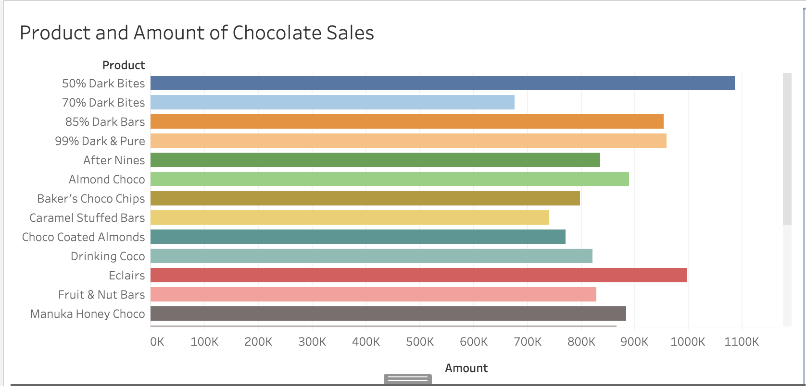
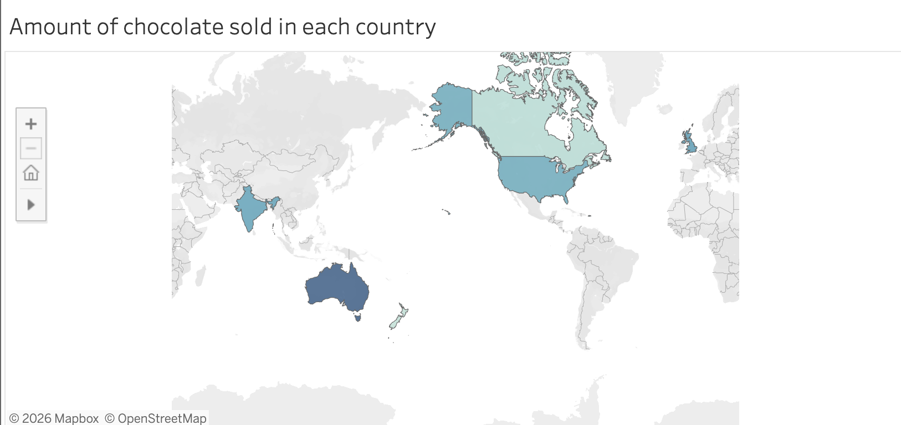

Introduction
I originally started this project in Tableau Public Desktop using a Kaggle dataset, but encountered problems getting the charts to display as I expected. After troubleshooting (including help from ChatGPT) I switched to Tableau Public in the web browser, uploaded a different dataset, and was able to build the visuals successfully.
Process & Design Choices
I created a bar chart and a map to explore chocolate sales. For the bar chart I colored the bars differently to improve readability. The map visualizes sales geographically to highlight regional differences. I felt these two designs complemented each other and represented the data effectively.
Findings and Surprises
Looking at dark chocolate (50%, 70%, 85%, 99%), I expected milder percentages to sell more. The bar chart confirms part of that expectation—50% Dark Bites had the highest sales in that group—but I was surprised that 85% and 99% also showed very strong sales, much higher than I anticipated. This suggests a notable market for very dark chocolate, possibly driven by flavor preference or health perceptions.
Another surprise was that non-dark items like Eclairs and Manuka Honey Choco sold well, acting as outliers against the assumption that milder chocolate dominates sales.
Questions for Further Analysis
- Why are 85% and 99% dark chocolates selling so well? Marketing, promotions, or brand loyalty?
- Are there regional or demographic preferences driving these trends?
- Are seasonal effects or bundles influencing the outliers?
Tools & Limitations
Tableau Public is excellent for quickly producing clean, interactive visuals via drag-and-drop without coding. Charts look professional and are easy to share. However, Tableau can be less flexible than Excel or Python for advanced customization or programmatic analysis. The free Tableau Public service also has limitations around privacy and very large datasets.
Conclusion
Tableau allowed me to explore the chocolate sales dataset and reveal both expected and surprising patterns. Further analysis (filters, segmentation, and promotional metadata) would help explain the unexpected popularity of very dark bars and certain non-dark products.
Written Reflection
This lab focused on preparing a dataset and creating a visualization using Tableau Public. The goal was to explore the data, create a graph using metrics and dimensions, and analyze the patterns that appeared in the visualization. The process involved both technical preparation and interpretation of the results.
The first step was preparing the dataset so that it could be uploaded into Tableau. At first I ran into a few errors when trying to upload the file. The main issue was that the data was not formatted in a way that Tableau could easily recognize. Some columns had inconsistent formatting and there were a few missing values. To fix this I had to clean the dataset before uploading it. This involved checking column names, making sure the data types were correct, and removing or adjusting any rows that caused errors. I also made sure that the headers were clearly labeled so Tableau could identify the fields as either dimensions or measures. After making these adjustments the dataset uploaded successfully and Tableau was able to recognize the structure of the data.
When designing the visualization I had to choose which metrics and dimensions would best represent the information. Metrics are the numerical values in the dataset and dimensions are the categories used to organize the data. I selected metrics that showed measurable changes in the data and dimensions that would help compare those values across categories. My goal was to create a visualization that clearly showed how the data changed across different groups or time periods. I also made design decisions about the type of chart to use so that the patterns in the data would be easier to see. Tableau made it relatively simple to drag and drop fields to build the chart, which helped speed up the design process.
Before looking at the final visualization I already had some expectations about what patterns might appear. Based on my understanding of the topic I expected to see certain trends across the categories in the dataset. For example I expected the values to gradually increase or decrease depending on the group being examined. In many parts of the graph these expectations were confirmed. The visualization showed a consistent pattern where certain categories had higher values than others, which aligned with what I expected based on the dataset.
However there were also sections of the graph that did not match my expectations. Some areas showed outliers where the values were much higher or lower than the surrounding data. These points stood out because they broke the pattern that appeared in the rest of the visualization. Seeing these outliers made me question why those specific values were so different. It is possible that they represent unusual events in the dataset or that the data for those categories was recorded differently.
Because of these unexpected results there are several questions that could guide further investigation. For example why do certain categories show much higher or lower values than others. Were there external factors that influenced the data during that period. Could the outliers be caused by errors in the dataset or by unusual circumstances in the real world. Answering these questions would require looking more closely at the context behind the data.
Overall Tableau Public was a useful tool for building the visualization. One of its biggest strengths is how quickly it allows users to create charts by dragging and dropping fields. It also automatically suggests visualization types based on the data. However there are also some limitations. Tableau can sometimes feel restrictive when trying to customize very specific visual styles or interactions. Other tools such as coding based visualization libraries offer more flexibility but require more technical knowledge. Even with these limitations Tableau is a powerful tool for exploring datasets and identifying patterns that might not be obvious at first.
Visualizations
Below are the data visualizations created for this analysis:
Graph 1: Product and Amount of Chocolate Sales

This bar chart displays chocolate sales by product, with bars colored for improved readability. The visualization reveals that 50% Dark Bites had the highest sales among dark chocolate products, while 85% and 99% dark chocolates showed surprisingly strong sales. Notable outliers include Eclairs and Manuka Honey Choco, which performed well despite not being dark chocolate varieties.
Graph 2: Amount of Chocolate Sold in each country

This geographic map visualizes chocolate sales by country, highlighting regional differences in sales volume. The visualization helps identify geographic patterns and potential regional preferences that could inform further analysis of market demographics and promotional strategies.